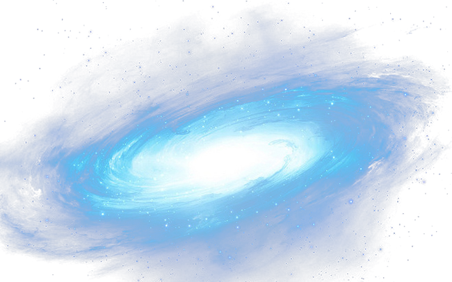
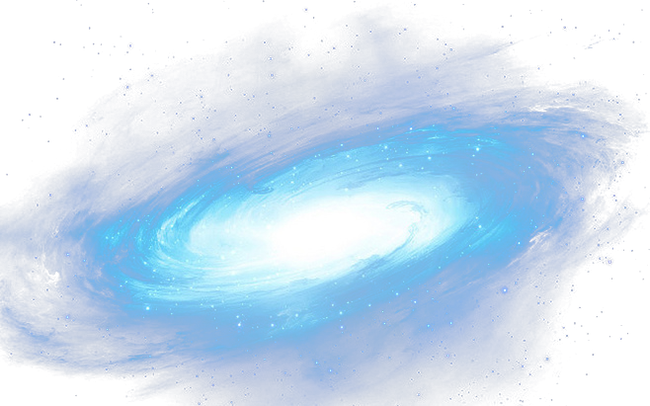
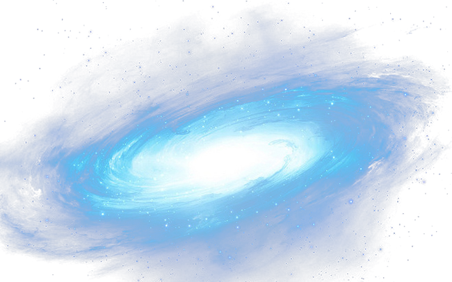
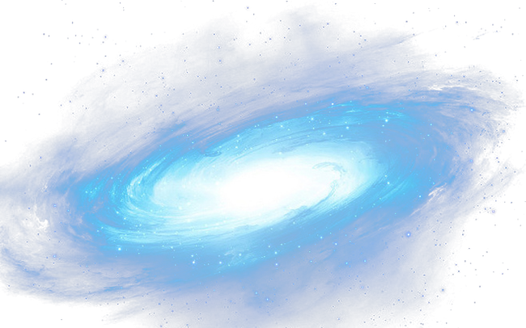

THIÊN HÀ
Mở rộng tầm mắt - Ngắm nhìn sự vĩ đại của vũ trụ
 

 


Thiên hà xoắn ốc là một loại thiên hà có cấu trúc xoắn ốc đặc trưng. Nó được hình thành từ một vòng xoắn với các cánh xoắn quanh một trục tâm, tạo ra hình dáng giống như một vỏ ốc.

 NGC 1300 qua ảnh hồng ngoại.
NGC 1300 qua ảnh hồng ngoại.
Cấu trúc của thiên hà xoắn ốc bao gồm một nhân tâm ở trung tâm, được bao quanh bởi các vòng xoắn và các cánh
xoắn
kéo dài ra. Nhân tâm chứa một số lượng lớn ngôi sao và có mật độ cao. Các vòng xoắn và cánh xoắn chứa các cụm
sao,
khí và bụi, tạo ra các vùng sáng và tối trên hình ảnh thiên hà.
Thiên hà xoắn ốc có tính đối xứng quanh trục tâm của nó. Vì vậy, khi nhìn từ phía trên hoặc dưới, thiên hà có
hình
dạng hình tròn hoặc hình elip, nhưng khi nhìn từ phía bên, ta nhìn thấy hình dạng xoắn ốc đặc trưng. Điều này là
do tốc độ quay của các cụm sao và khí trong thiên hà xoắn ốc, tạo ra một sự bẻ cong và kéo dãn trong cấu trúc
của
nó.
Thiên hà xoắn ốc có nhiều dạng và kích thước khác nhau. Một số có cánh xoắn rộng và đặc, trong khi những thiên
hà
khác có cánh xoắn mảnh và chất chứa ít khí và bụi hơn. Các thiên hà xoắn ốc cũng có đa dạng màu sắc, từ các vùng
sáng và xanh lá cây đến các vùng đỏ hơn.
Thiên hà elip là một dạng thiên hà trong vũ trụ. Chúng có hình dạng dẹp hình elip và không có cấu trúc xoắn ốc hoặc vòng tròn như các loại thiên hà khác như thiên hà xoắn ốc hay thiên hà không gian. Đây là loại thiên hà phổ biến nhất trong vũ trụ và thường có kích thước lớn, chứa hàng tỷ hoặc hàng nghìn tỷ ngôi sao.
Thiên hà elip được hình thành từ các cụm sao giàu nguyên tố và ngôi sao tuổi đời trung bình. Chúng có mật độ sao
tương đối đồng đều trong toàn bộ thiên hà và không có cấu trúc rõ ràng như các cánh địa trong thiên hà xoắn ốc.
Thông thường, thiên hà elip không có vùng trung tâm sáng rõ nét như thiên hà ngôi sao hoạt động hay thiên hà vô
tuyến (quasar).
Thiên hà elip có các loại từ E0 đến E7, tương ứng với hình dạng từ hình cầu đến hình dẹp nhất. Số chỉ mức độ dẹp
của thiên hà elip và không liên quan đến kích thước hoặc khối lượng của chúng. Họng số màu (color index) của các
thiên hà elip thường là cao, chỉ ra rằng chúng chứa ít khí và bụi so với các loại thiên hà khác.
Nguyên nhân gây ra hình dạng dẹp của thiên hà elip chưa được hiểu rõ. Một số giả thuyết cho rằng tác động của
trọng lực từ các thiên hà lân cận có thể kéo dài và làm thay đổi hình dạng của thiên hà elip theo thời gian. Một
số thiên hà elip cũng có một số dấu hiệu về sự giao thoa hoặc sự đàn hồi với các thiên hà khác, cho thấy sự
tương tác giữa chúng.

Nhân thiên hà hoạt động (AGN) là vùng nhân đặc của một thiên hà, do quá trình bồi đắp của hố đen siêu nặng tại nhân gây nên. Nhân AGN đặc này bị bao bọc bởi chất khí và bụi, chuyển động xoáy quanh khi rơi vào lỗ đen, gây nên lực ma sát. Nó tạo ra bức xạ vô cùng lớn làm AGN trở thành nguồn phát bức xạ mạnh nhất trong vũ trụ với độ sáng tương đương với bức xạ của hàng tỉ ngôi sao phát ra từ một vùng chỉ bằng hệ Mặt Trời.
Thiên hà có chứa nhân AGN được gọi là thiên hà hoạt động. Phần lớn năng lượng của nó không được phát ra từ các ngôi sao, chất bụi và chất khí trong vùng trống giữa các sao như các thiên hà thường. Bức xạ AGN có mặt trong một phần hay tất cả các vùng của bức xạ điện từ như radio, hồng ngoại, ánh sáng nhìn thấy, cực tím, X quang hay tia gamma.
Thiên hà lùn là một thiên hà nhỏ bao gồm vài tỷ ngôi sao, một số lượng nhỏ so với 200-400 tỉ sao của dải Ngân Hà. Đám mây Magellan Lớn, có trên 30 tỷ ngôi sao, đôi khi được phân loại như là một thiên hà lùn trong khi những người khác xem nó là một thiên hà chính thức quay quanh dãi Ngân Hà.
Các giả thiết hiện nay cho rằng hầu hết các thiên hà, bao gồm cả các thiên hà lùn, hình thành kết hợp với vật chất tối hoặc trong bụi khí chứa kim loại. Tuy nhiên, NASA Galaxy Evolution Explorer xác định các thiên hà lùn mới hình thành trong khí thiếu kim loại. Các thiên hà này nằm trong vành đai Leo, một đám mây hydro và heli quanh hai thiên hà lớn trong chòm sao Leo.
Có nhiều thiên hà lùn trong Nhóm Địa phương: các thiên hà nhỏ này thường quay quanh thiên hà lớn hơn, như Ngân hà, thiên hà Andromeda và thiên hà Tam Giác. Một bài báo năm 2007 đã cho rằng nhiều thiên hà lùn đã được tạo ra bởi các lực triều trong quá trình tiến hóa ban đầu của dải Ngân hà và thiên hà Andromeda. Thiên hà lực triều lùn được tạo ra khi các thiên hà va chạm và khối lượng hấp dẫn của chúng tương tác. Dòng vật chất thiên hà bị kéo ra khỏi thiên hà mẹ và các quầng vật chất tối bao quanh chúng.